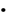

1. Aim
To understand the theoretical foundations of Convolutional Neural Networks (CNNs) and their application to image classification, and to study how convolution, feature extraction, and pooling operations enable efficient learning from color images, preparing students for practical implementation on the CIFAR-10 dataset.
2. Theory
Fully connected networks aren’t ideal for images because flattening destroys spatial relationships between nearby pixels, and the dense connections create too many parameters, making them costly and prone to overfitting. CNNs solve this by using local connectivity and shared weights, which preserve spatial patterns and make learning more efficient and effective for visual data.
A digital image can be represented as a 3D array with height, width, and channels. For color images, the three channels correspond to RGB intensity values. For example, CIFAR-10 images are 32 × 32 pixels with three channels, giving an input tensor of shape 32 × 32 × 3. CNNs take this multi-dimensional input directly, preserving spatial and channel-wise information during processing.
There are neurons in convolution layers. Each neuron is connected only
to a local region (receptive field) of the input, computes a weighted
sum + bias, applies an activation function, and contributes to one
element in a feature map.
Referring to above figure1 it shows us that :
Convolution slides a small filter over the image and computes weighted sums to capture local features, such as edges and textures. Reusing the same filter across the image reduces parameters while keeping strong feature learning.

Mathematically, the convolution operation can be expressed as the above equation where I is the input image and K is the kernel.
Refer fig 2. To understand how convolution operation is actually performed by the kernel on an input image matrix and a feature map is calculated.
Refer fig 3 shown below to get an idea of how convolution operation is performed on RGB images which has 3 channels
After convolution, the output is a feature map. Each filter detects a specific feature, and combining multiple filters produces multiple feature maps. As layers go deeper, simple features (like edges) combine into complex ones (shapes and parts), letting CNNs learn useful patterns automatically without manual feature design.
Stride is how many pixels the filter shifts each step; a larger stride reduces the output size. Padding adds (usually zero) pixels around the input to control output dimensions and keep edge information. where N is the input size, F filter size, P padding, and S stride.

Refer fig 4 to understand how stride operation is performed on input matrix with a kernel size of 3*3 to get feature map as 3*3
Output=  +1 = 3
+1 = 3
Refer fig 5 to visualise how our output feature map will look like if padding is 1 so,
Output= +1= 5
VI. Activation Functions in CNNs
After convolution, an activation function adds non-linearity. The most common is  which helps reduce vanishing gradients and speeds up training.
which helps reduce vanishing gradients and speeds up training.
Refer figure shown below to understand how Relu function affects the filter output.
VII. Pooling Layers
Pooling downsamples feature maps to reduce computation and make features more robust to small shifts. Common types are max pooling, average pooling, and global average pooling, and they can also help reduce overfitting.
VII . i Max Pooling
Max pooling is a pooling operation that selects the maximum element from the region of the feature map covered by the filter. Thus, the output after max-pooling layer would be a feature map containing the most prominent features of the previous feature map as shown in Fig 7.
ii Average Pooling
Average pooling computes the average of the elements present in the region of the feature map covered by the filter.Thus, while max pooling gives the most prominent feature in a particular patch of the feature map, average pooling gives the average of features present in a patch as shown in Fig 8.
Before entering the fully connected layer, the featuremaps from the previous convolutional and pooling layers are typically flattened into a one-dimensional vector as shown in Fig 9.This is done to convert the spatial information into a format suitable for fully connected layers.
IX. Overall CNN Architecture
A typical CNN stacks convolution, activation, and pooling layers to extract features, then uses fully connected layers or global pooling as a classifier as shown in FIg 10. This pipeline enables strong image recognition performance with efficient use of parameters.
Merits of Convolutional Neural Networks:
Demerits of Convolutional Neural Networks:
3. Pre-Test (MCQs)
a) Sequential data
(Incorrect because sequential data, such as text or time series, are better handled by RNNs or Transformers.)
b) Tabular data
(Incorrect because tabular data does not inherently contain spatial structure.)
c) Image data
(Correct because CNNs are specifically designed to exploit spatial relationships present in images.)
d) Categorical data
(Incorrect because categorical data requires encoding techniques rather than convolution operations.)
Answer: c
a) They cannot use activation functions
(Incorrect because fully connected networks can use activation functions.)
b) They ignore spatial relationships between pixels
(Correct because flattening images destroys spatial locality information.)
c) They cannot be trained using gradient descent
(Incorrect because fully connected networks are trainable using gradient-based methods.)
d) They require labeled data
(Incorrect because labeled data is required by most supervised learning models.)
Answer: b
a) One
(Incorrect because grayscale images have one channel, not RGB images.)
b) Two
(Incorrect because RGB consists of three color components.)
c) Three
(Correct because RGB images contain Red, Green, and Blue channels.)
d) Four
(Incorrect because an alpha channel is not part of standard RGB images.)
Answer: c
a) To reduce the number of training samples
(Incorrect because filters operate on features, not on sample count.)
b) To detect local patterns in the input image
(Correct because filters learn to identify features such as edges and textures.)
c) To normalize pixel values
(Incorrect because normalization is a preprocessing step.)
d) To perform classification directly
(Incorrect because classification is performed by the final layers.)
Answer: b
a) Kernel
(Incorrect because a kernel is the filter applied, not the output.)
b) Feature map
(Correct because the convolution operation produces feature maps.)
c) Weight matrix
(Incorrect because weights belong to the filter.)
d) Loss map
(Incorrect because loss is computed after prediction.)
Answer: b
a) It increases computational complexity
(Incorrect because ReLU actually reduces computational cost.)
b) It introduces non-linearity into the model
(Correct because non-linearity allows learning complex patterns.)
c) It converts images into vectors
(Incorrect because flattening performs this operation.)
d) It performs pooling
(Incorrect because pooling is a separate operation.)
Answer: b
a) To increase the spatial dimensions of feature maps
(Incorrect because pooling reduces spatial dimensions.)
b) To reduce computational complexity
(Correct because pooling downsamples feature maps.)
c) To add non-linearity
(Incorrect because activation functions provide non-linearity.)
d) To classify images
(Incorrect because classification is done by final layers.)
Answer: b
a) Average Pooling
(Incorrect because it computes the mean value.)
b) Min Pooling
(Incorrect because it selects the minimum value.)
c) Max Pooling
(Correct because it selects the highest activation in a region.)
d) Global Pooling
(Incorrect because it operates over the entire feature map.)
Answer: c
a) Increases the number of parameters
(Incorrect because parameter sharing reduces parameters.)
b) Reduces overfitting and memory usage
(Correct because fewer parameters improve generalization.)
c) Eliminates the need for training
(Incorrect because training is still required.)
d) Removes the need for activation functions
(Incorrect because activation functions are essential.)
Answer: b
a) Sorting numerical data
(Incorrect because sorting is not a learning task.)
b) Image classification
(Correct because CNNs excel at visual recognition tasks.)
c) Database management
(Incorrect because databases are not learning models.)
d) Text summarization
(Incorrect because NLP tasks require different architectures.)
Answer: b
The objective of this experiment is to implement a Convolutional Neural Networks (CNN) for multi-class image classification and to analyze its performance on a real-world colour image dataset. This experiment focuses on understanding convolutional feature extraction, pooling operations, data augmentation, training dynamics, and evaluation strategies using the CIFAR-10 dataset.
1.Import Required Libraries
2.Dataset Loading and Description
3.Exploratory Data Analysis (EDA)
4.Data Preprocessing
5.Data loading and augmentation
6.CNN Model Architecture Design
7. Training Configuration
8. Model Training
The model is trained for a fixed number of epochs, where in each epoch a forward pass is performed to generate predictions, the loss is computed, and backpropagation is applied followed by an optimizer step to update the model parameters. During this process, the training loss and accuracy are recorded at the end of every epoch to monitor learning progress.
9. Model Evaluation
Test the trained CNN on unseen data by computing test accuracy and error metrics (e.g., confusion matrix/class-wise accuracy) to identify where predictions fail.
10. Result Visualization
11. Performance Analysis
5. Post-Test (MCQs)
a) To increase the number of test samples
(Incorrect because augmentation is applied only to the training data, not the test data.)
b) To create diverse variations of training images
(Correct because augmentation generates modified versions of existing images, improving generalization.)
c) To reduce the number of classes
(Incorrect because augmentation does not change the number of classes.)
d) To replace normalization
(Incorrect because augmentation and normalization serve different purposes.)
Answer: b
a) They require more parameters
(Incorrect because convolutional layers significantly reduce the number of parameters.)
b) They preserve spatial relationships between pixels
(Correct because convolution operates on local neighborhoods and maintains spatial structure.)
c) They eliminate the need for training
(Incorrect because CNNs still require training through backpropagation.)
d) They directly perform classification
(Incorrect because classification is done by the final layers.)
Answer: b
a) To convert images into grayscale
(Incorrect because normalization does not change the number of channels.)
b) To scale pixel values for stable and faster training
(Correct because normalized inputs improve gradient stability and convergence.)
c) To reduce the dataset size
(Incorrect because normalization does not affect the dataset size.)
d) To remove noise from images
(Incorrect because normalization does not perform denoising.)
Answer: b
a) To increase spatial resolution
(Incorrect because pooling reduces spatial dimensions.)
b) To reduce computational complexity and overfitting
(Correct because pooling downsamples feature maps and reduces parameters.)
c) To introduce non-linearity
(Incorrect because activation functions provide non-linearity.)
d) To classify images
(Incorrect because classification is handled by the final layer.)
Answer: b
a) It converts outputs into probabilities
(Incorrect because softmax performs probability conversion.)
b) It helps mitigate the vanishing gradient problem
(Correct because ReLU maintains strong gradients for positive activations.)
c) It performs feature extraction
(Incorrect because convolution extracts features, not activation functions.)
d) It replaces pooling layers
(Incorrect because activation and pooling are separate operations.)
Answer: b
a) It increases the number of trainable parameters
(Incorrect because it reduces parameters.)
b) It aggregates spatial information before classification
(Correct because it summarizes each feature map into a single value.)
c) It replaces convolution layers
(Incorrect because it operates after feature extraction.)
d) It performs data augmentation
(Incorrect because augmentation is a preprocessing step.)
Answer: b
a) Because images are very large
(Incorrect because CIFAR-10 images are small.)
b) Because images have no labels
(Incorrect because CIFAR-10 is a labeled dataset.)
c) Because images are low resolution with high inter-class similarity
(Correct because small images and similar classes increase classification difficulty.)
d) Because it contains only grayscale images
(Incorrect because CIFAR-10 contains RGB images.)
Answer: c
a) Training speed of the model
(Incorrect because speed is not shown in a confusion matrix.)
b) Correct and incorrect class-wise predictions
(Correct because it shows how predictions are distributed across classes.)
c) Loss function values
(Incorrect because loss is not displayed in a confusion matrix.)
d) Learning rate changes
(Incorrect because the learning rate is not represented.)
Answer: b
a) To increase model accuracy
(Incorrect because plotting does not affect model performance.)
b) To visualize learning behavior and detect overfitting
(Correct because divergence between curves indicates overfitting or underfitting.)
c) To perform data preprocessing
(Incorrect because preprocessing occurs before training.)
d) To reduce training time
(Incorrect because visualization does not speed up training.)
Answer: b
a) Increasing the number of classes
(Incorrect because generalization is not improved by more classes.)
b) Using data augmentation and regularization techniques
(Correct because these techniques reduce overfitting and improve robustness.)
c) Removing pooling layers
(Incorrect because pooling helps control overfitting.)
d) Avoiding normalization
(Incorrect because normalization improves training stability.)
Answer: b
6. References